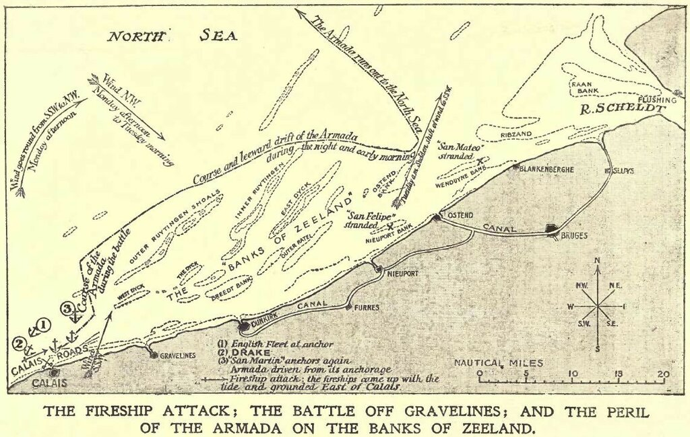
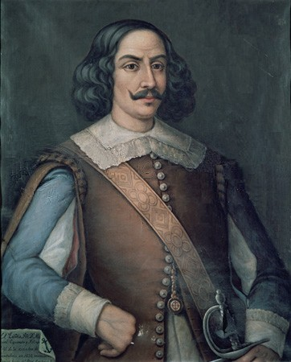

Продолжим знакомиться с содержанием Дневника солдата:
Во вторник 9-го августа флот противника подошел к нашему с наветренной стороны и последовал за нами на дистанции примерно полторы лиги, не выказывая желания к дальнейшему сближению. И хотя наш флагман шел совсем один с наветренной стороны, а неприятельский флот был рядом, ни одного выстрела не прозвучало за целый день.
После полудня этого дня Его превосходительство [герцог Медина-Сидония –g.g.] послал фелуку чтобы доставить адмирала [дона Рекальде –g.g.] на собрание совета, но адмирал не пожелал следовать туда, так как чувствовал себя уязвленным отсутствием мужества и смятением на флагманском корабле, и тем, что на ряде предыдущих совещаний его мнение ни во что не ставили. Тогда Его превосходительство второй раз послал за адмиралом, настойчиво потребовав его присутствия. И хотя адмирал был против, совет принял решение вернуться в Испанию, проложив курс вокруг Шотландии и Ирландии.
Примечание 22. Ни один из других хронистов Непобедимой армады не отмечает тот факт, что в течение 9 августа англичане не произвели ни одного выстрела. Тем не менее, это было так или почти так. Причина банальна – у англичан кончились боеприпасы. Вот как пишет об этом Уолсингему, например, упоминавшийся ранее Уильям Уинтер: «Our cartridges spent, and munitions wasted». («Порох истрачен, боеприпасы израсходованы») Нет сомнения, что Рекальде знал об этой проблеме у англичан, поэтому он и настаивал на военному совете у герцога Медина-Сидония, чтобы испанский флот вернулся к берегам Фландрии и попытался еще раз соединиться с армией герцога Пармы. Его поддержал и советник герцога Диего Флорес, предложивший вернуться в Кале. Однако совет вновь проигнорировал мнение Рекальде, и Армада легла на курс возвращения в Испанию через Северное море. Возможно, на решение совета повлияло тяжелое положение с боеприпасами на кораблях самой Армады, особенно с ядрами крупных калибров.
Ошибочность такого решения подчеркнул в своих записках главный казначей Армады Calderón: «Пройти 750 лиг (4167 км) по штормящим морям, почти незнакомым нам, прежде чем мы вернемся в Корунью – вряд ли было мудрым решением.»
Приведем еще раз карту маршрута, на котором было принято это роковое решение.

Карта банок Фландрии из книги Hale, John Richard «The Story of the Great Armada»
Корабли Армады продолжали сохранять боевой ордер, с той лишь разницей, что положение в арьергарде заняли наиболее мощные корабли: флагманский галеон Сан Мартин, корабль вице-флагмана дона Рекальде Сан Хуан, каракка Лейвы La Rata Santa Maria Encoronada, галеон кастильской эскадры Сан Маркос (San Marcos) и три оставшихся в строю галеаса. Вся остальная Армада шла на некотором удалении под ветром. Английский флот численностью 109 кораблей следовал с наветренной стороны от испанского арьергарда «на дистанции выстрела из длинной кулеврины». Ветер был умеренный, но иногда заходил на северо-западные румбы, так что испанские моряки вели свои корабли в крутой бейдевинд, чтобы избежать сноса на пески Зеландии. В конце концов Медина-Сидония вынужден был лечь в дрейф, за ним последовали корабли арьергарда. Герцог послал несколько паташей с приказом для остальной Армады также ложиться в дрейф и дожидаться противника. Однако англичане по-прежнему держались в стороне, то удаляясь, то приближаясь короткими галсами.
Ветер и течения сносили испанцев к берегу. Якоря не держали на зыбком песчаном грунте. Еще немного – и Провидение сделает работу за англичан. Лоцманы единодушно советовали герцогу продолжить движение единственно возможным курсом, прижимаясь к берегу. Лот, брошенный с русленя флагманского галеона, показал 7 брасов (саженей, 12,8 м), затем шесть. Это при том, что осадка Сан Мартина была около 5 брасов. Некоторык корабли Армады стали задевать килем за грунт. Казалось, беда неминуема. Медина-Сидония призвал к себе капитана-ветерана Мигеля де Окендо, который подошел на своей Santa Ana к борту флагмана.

Командующий баскской эскадрой Непобедимой армады адмирал Мигель де Окендо (Museo Naval de Madrid)
Короткий диалог между флагманом и опытным моряком Окендо услышали все моряки обоих кораблей, несмотря на шум прибоя. «Что делать, сеньор Окендо?» – задал вопрос герцог. Ответ был коротким и язвительным: «Пусть Вам ответит Диего Флорес», - сказал Окендо, намекая на непопулярность первого советника герцога по военно-морским делам. «Что касается меня, - продолжил старый капитан, – то я собираюсь сражаться до конца. Пришлите мне ядра.»
Но судьба на этот раз хранила испанцев: ветер начал отходить к югу (один очевидец тех событий даже написал, что ветер сменил свое направление на противоположное, на юго-восточное; но все же более реалистичным представляется запись в дневнике Медина-Сидония: ветер изменился на западно-юго-западный. Но и этого вполне хватило, чтобы обойти опасные мели и выйти в Северное море.)
Продолжение последует.